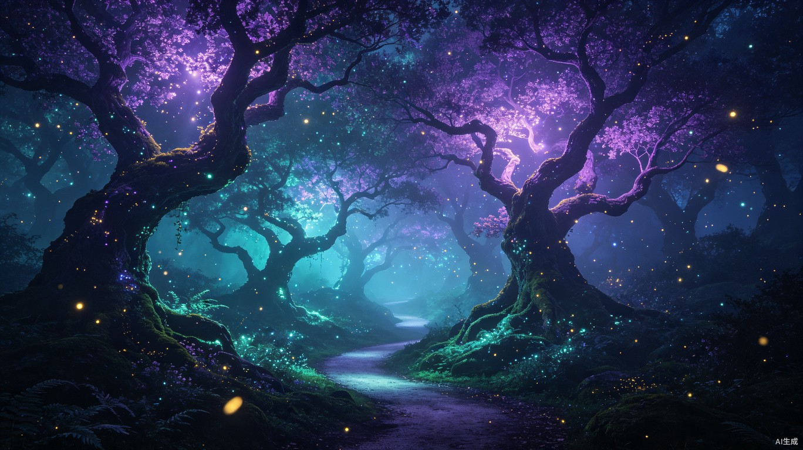
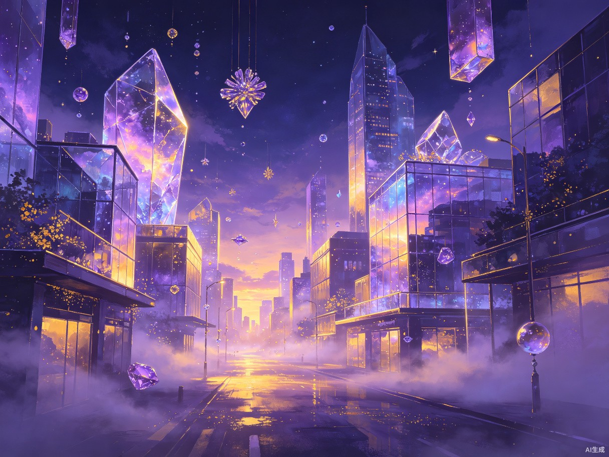
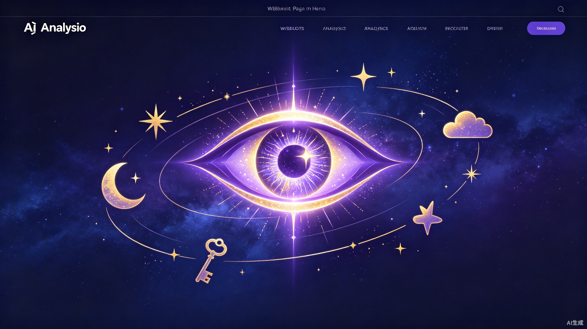

梦境旅人
2 小时前
飞翔在紫色云海
我梦见自己长出了透明的翅膀，在一片无际的紫色云海中翱翔。云朵像棉花糖一样柔软，远处的山峰闪闪发光，仿佛在召唤我飞向未知的彼岸。
神秘
飞翔
梦境探索者 Lv.8
梦境统计
47
总梦境
23
解梦次数
12
花园发布

用文字描绘你梦境中的景象、感受与故事，让系统为你还原那些转瞬即逝的画面。
从文字到画面的超现实旅程，只需三个简单步骤。
用你自己的语言，记录下梦境中的场景、人物、情绪与细节。文字越生动，还原越真实。
系统解析你的描述，融合超现实视觉风格，生成独一无二的梦境画面。
在还原的梦境世界中自由漫游，发现潜意识中隐藏的故事与象征。
0
梦境已还原
0
活跃用户
0
解梦师
0
创意作品

2025年6月28日 凌晨 03:42
每一段梦境都是心灵投射的画卷。在这里，浏览和回溯那些已还原的梦境碎片，感受意识深处的低语。

柔和的月光洒落在无尽的海面上，潮汐缓缓涌动，仿佛大地在轻声呼吸。远处传来鲸鱼的低鸣。

城市的建筑如同巨大的水晶棱柱，在暮色中折射出万千光芒。街道上空无一人，只有光在流动。
无尽的翠绿森林中，一条小径蜿蜒深入。树叶间洒落的光斑如同星尘，空气中弥漫着泥土与露水的气息。
身体变得轻盈如羽毛，乘着暖风升入云端。脚下的世界变得渺小，远方传来悠远的钟声。
回到童年的老屋里，壁炉中的火光映红了每个人的脸庞。窗外的雪静静落下，屋内满是笑声。
穿行于星轨之间，周围是旋转的银河与流光。时间在这里失去了意义，只有永恒的宁静与惊叹。

分享你的梦境，探索他人的梦世界
梦境旅人
2 小时前
我梦见自己长出了透明的翅膀，在一片无际的紫色云海中翱翔。云朵像棉花糖一样柔软，远处的山峰闪闪发光，仿佛在召唤我飞向未知的彼岸。
星夜漫步
5 小时前
在一栋古老的建筑里，我不断上楼梯，但每走一层楼梯就会从脚下消失。回头望去，只有无尽的深渊。尽管如此，我并没有感到恐惧，反而有一种莫名的平静。
月光捕手
昨天
在一个灯火通明的咖啡馆里，一个完全陌生的面孔坐到了我面前，开始讲述一段我从未经历却似曾相识的故事。那些细节如此真实，醒来后我久久不能忘怀。
晨雾拾光
2 天前
推开那扇褪色的木门，院子里桂花树的香味扑面而来。阳光洒在青石板路上，奶奶在厨房里哼着歌。一切都那么真实，直到我意识到这只是一场梦。
幻影编织者
3 天前
穿越一面巨大的镜子后，来到了一个左右颠倒的世界。文字是反的，道路是反的，连时间似乎都在倒流。我在这个镜像世界中寻找出口，却发现了另一个自己。

AI 智能分析 + 花园社区智慧
描述你的梦境，AI 将为你解析其中的象征与隐喻。
这是一则关于自我探索与内在导航的梦境。迷失森林象征着潜意识中尚未理清的人生方向，而会说话的猫则代表直觉的觉醒——即使方向未知，内心已有答案在等你。
这个梦暗示你正处在人生的一个十字路口。迷路感反映现实中面对选择时的困惑，而会说话的猫是你的内在智慧化身——它提醒你，与其焦虑地寻找外在答案，不如静下心来倾听内心的声音。信任直觉，方向自会清晰。
分享你的梦境，让花园社区成员为你解读。
飞翔代表对自由的渴望，坠落可能暗示对失控的恐惧。也许你正在追求某个目标，但内心害怕失败。
水通常代表情感。在水下呼吸说明你正在适应一种曾经让你害怕的情绪环境，这是成长的信号。
我也做过类似的梦！后来发现确实在经历一段情感转变期，梦境真的很神奇。
"家"在梦中通常象征内心的安全基地。找不到路可能暗示你正经历身份认同的转变，旧的安全感在消融。

把梦境变成小说、电影、动画的灵感源泉
从梦境出发，选择适合的创作模板，快速生成专业级创意内容
将梦境转化为完整的故事框架，包含情节脉络、角色关系与叙事节奏
为梦境中出现的角色建立完整档案，包括性格、动机与成长弧线
构建梦境世界的完整设定体系，涵盖地理、历史、魔法与文明规则
将梦境场景拆解为分镜帧，标注镜头语言、运镜方式与画面描述
基于梦境自动生成的故事大纲预览
在一座漂浮于星河之间的古老图书馆里，每一本书都是一个未完成的梦境。旅人偶然闯入这片被遗忘的空间，发现书页上的文字正在缓缓消失。为了保存这些即将湮灭的故事，旅人必须在梦境完全消散前，找到连接每个故事的隐秘线索，拼凑出图书馆被遗忘的真相。
图书馆正被名为"静默潮汐"的力量吞噬，每一个被遗忘的梦境都在加速消散。旅人发现，拯救图书馆的唯一方法是将所有未完成的故事连接成一个完整的叙事闭环——但这意味着必须亲手改写其中一些故事的结局，包括属于自己记忆的那个故事。
旅人坠入星河图书馆，遇见守卷人，得知梦境消散的危机，开始踏上收集故事碎片的旅途。
旅人在各个梦境中穿行，逐渐发现守卷人隐瞒的秘密，墨痕的出现让一切变得复杂。
旅人面对最终抉择——改写结局以拯救图书馆，或是保留原貌让故事自由消散。